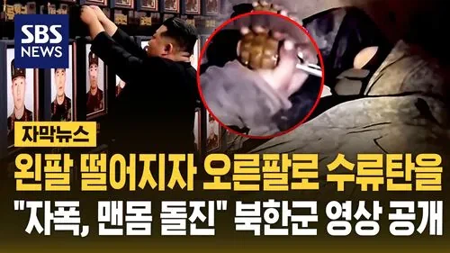
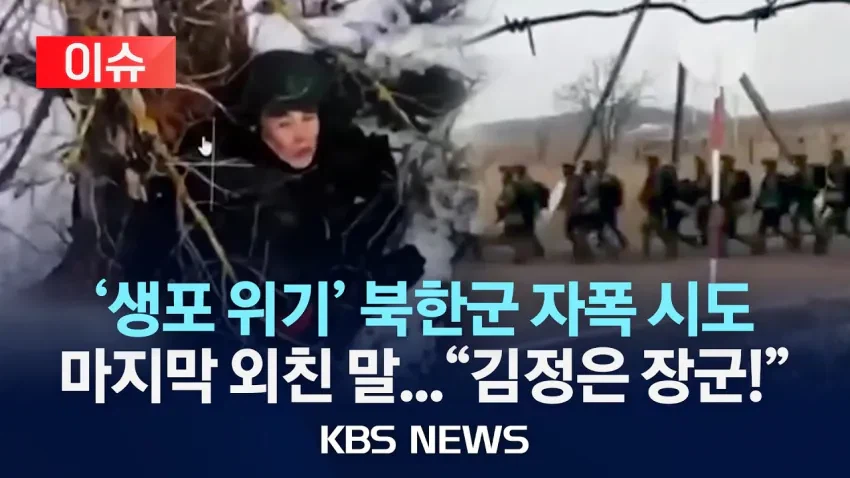
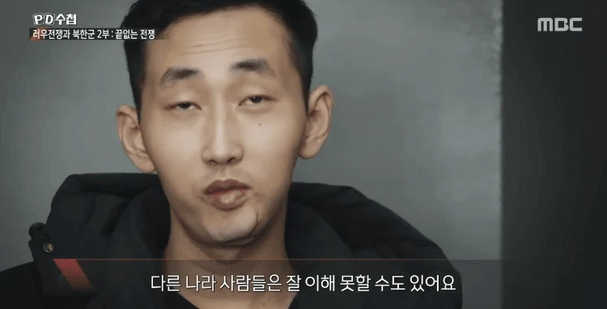
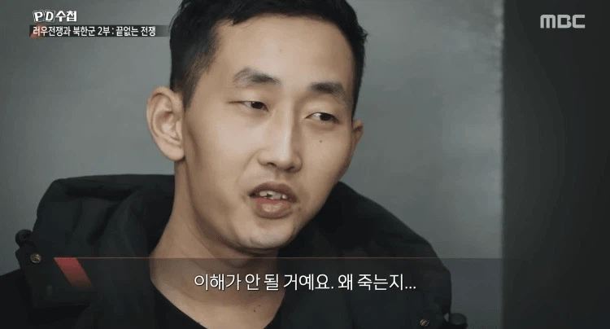
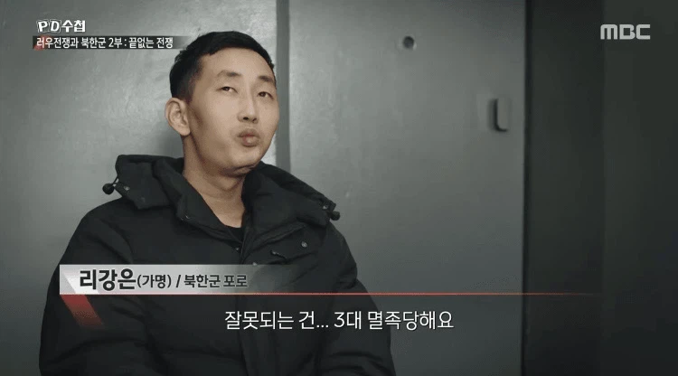
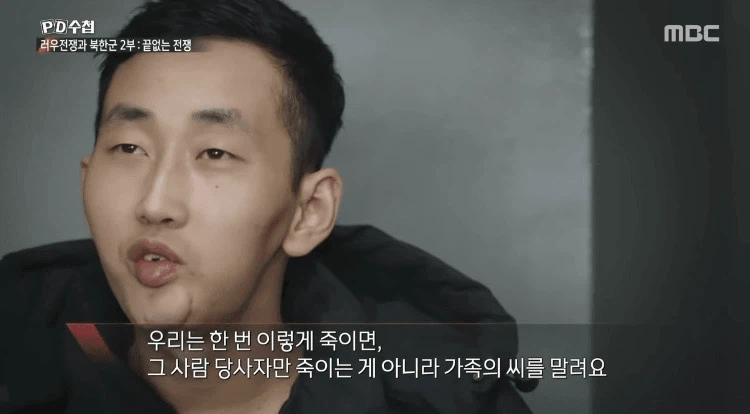
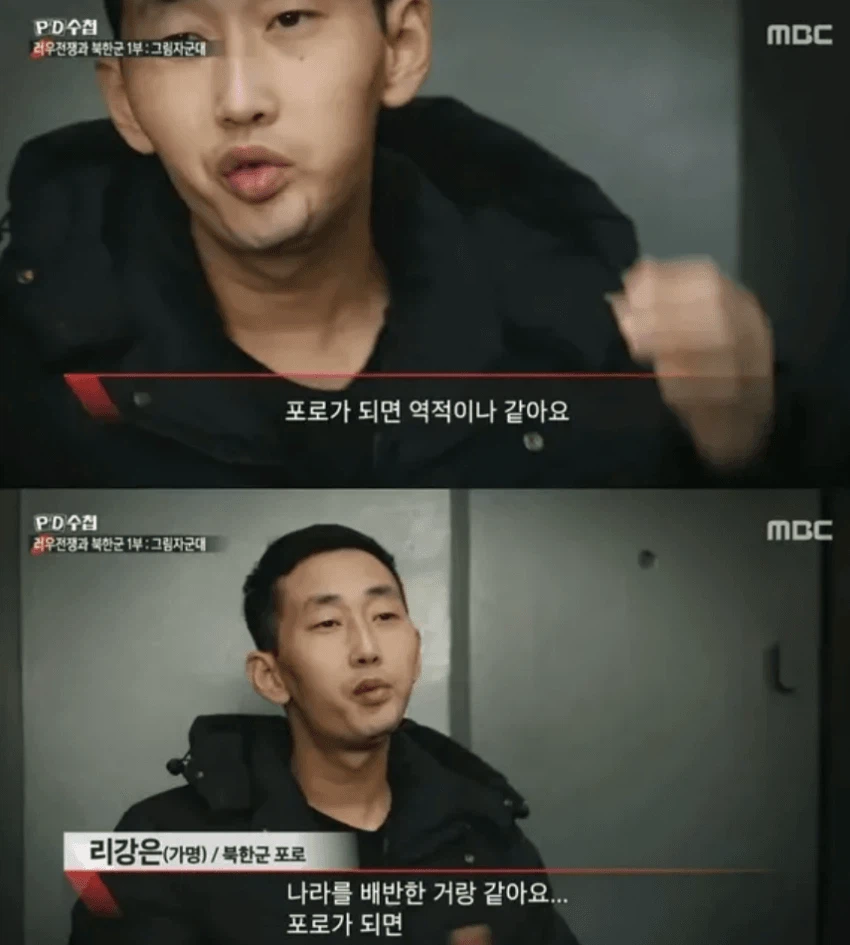
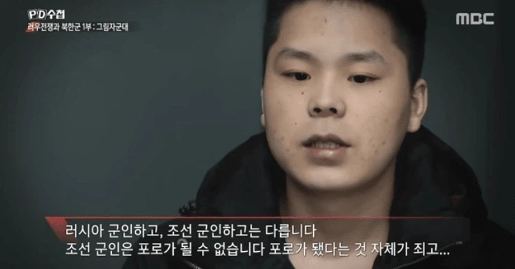
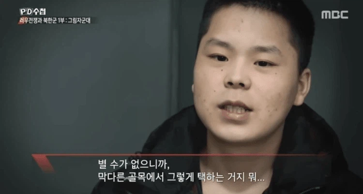
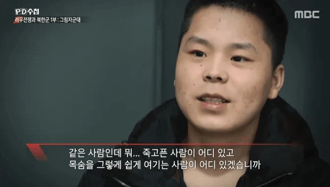

우크라전에서 북한군은 절대 포로가 되지 않고
자폭하는 걸로 악명이 높았는데...처음에는 철저한 세뇌로 인해서 그런줄 알았는데
일고 보니 자폭할 수 밖에 없었던 이유








사실 세뇌보다는 가족들까지 피해볼까봐 하는거였음
딴 나라 군인들은 걍 항복하는거 다 알고있음
자기들도 걍 살고 싶음. 가족들 싹 다 죽으니까 못할 뿐임
(이 둘도 자폭하려다 실패, 포로가 된 북한군은 단 이 둘뿐)
저 두 사람 가족들은 날벼락이네...
너무 안됐다